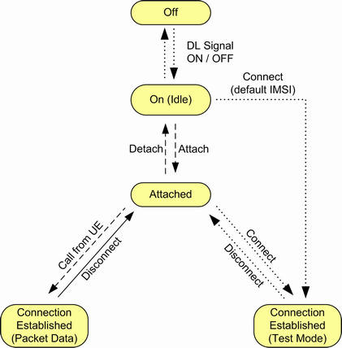

The main PS connection states are described in the following table.
PS state | Description |
|---|---|
"Off" | No signal transmission |
"On (Idle)" | The R&S CMW emulates a UTRAN cell, transmitting a WCDMA signal to which the UE can synchronize. After synchronization, the UE can read the packet switched domain information. It learns that the instrument (representing the serving cell in a real network) supports packet switched services and can initiate a PS attach. |
"Attached" | The UE is PS attached. |
"Connection Established" | A connection has been set up, either an RMC on PS, a mobile terminated test mode connection, or a mobile originated end-to-end packet data connection. |
Several control commands initiated by the instrument or by the UE switch between the listed states. The following figure shows possible state transitions.

- "Signaling"
Displayed, for example, during attach - "Connecting"
Displayed during state transition from "On" or "Attached" to "Connection Established" - "Disconnecting"
Displayed during state transition from "Connection Established" back to "On" or "Attached" - "Incoming Handover / Redirection Preparation"
Displayed while an inter-RAT handover/redirection from another signaling application is requested. - "Incoming Handover / Redirection"
Displayed while an inter-RAT handover/redirection from another signaling application is performed. - "Outgoing Handover / Redirection"
Displayed while an inter-RAT handover/redirection to another signaling application is performed.